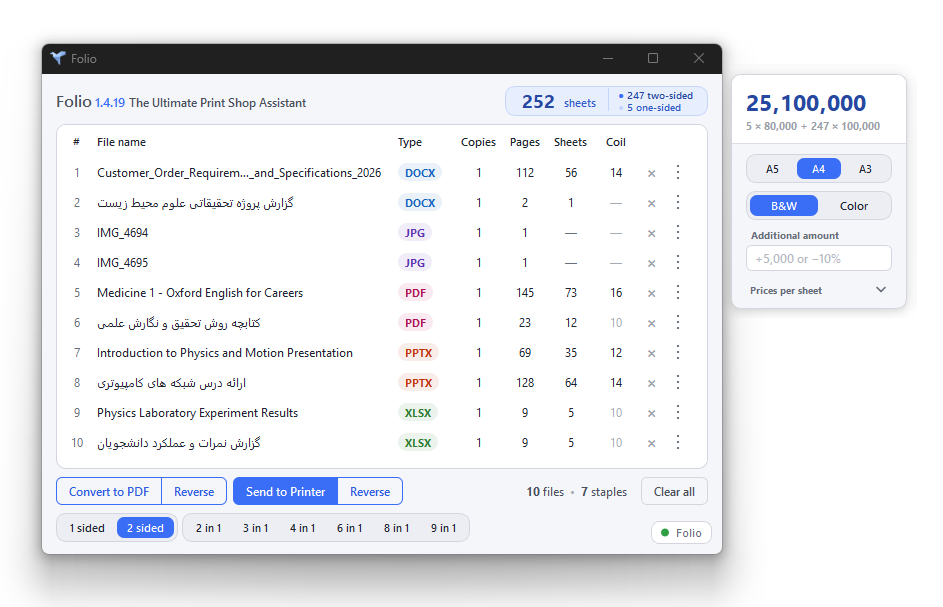

شمارش خودکار صفحهها
شمارش همزمان صفحات چندین فایل با فرمت های متنوع، حتی فایلها و آرشیوهای رمزدار. فولیو هنگام شمارش فایلهای تکراری یا معیوب را تشخیص و به شما هشدار میدهد.
فولیو، دستیار هوشمند دفاتر فنی و کپیسنترها؛ نرمافزاری ویندوزی برای مدیریت تمام مراحل چاپ، از شمارش صفحات و محاسبه تعداد برگ و هزینه گرفته تا تنظیمات و ارسال فایلها برای چاپ، همه در یک پنجره.

شمارش همزمان صفحات چندین فایل با فرمت های متنوع، حتی فایلها و آرشیوهای رمزدار. فولیو هنگام شمارش فایلهای تکراری یا معیوب را تشخیص و به شما هشدار میدهد.
محاسبه هزینه چاپ بر اساس اندازه کاغذ، چاپ رنگی یا سیاهوسفید، چاپ یکرو یا دورو، تعداد نسخهها و بازه صفحات انتخابشده؛ با امکان تعریف و ویرایش تعرفهها بر اساس نرخهای دلخواه شما.
تنظیم چاپگر، اندازه کاغذ، مقیاس، کیفیت چاپ، حاشیهها، تعداد نسخهها و ترتیب چاپ. همچنین میتوانید بین ۲ تا ۹ صفحه را در هر طرف برگ بچینید یا از قابلیت چاپ جزوهای (Booklet) استفاده کنید.
فولیو ترتیب صفحات را بهصورت خودکار معکوس میکند تا بتوانید اسناد فارسی و عربی را از سمت راست منگنه کنید؛ حتی با چاپگرهایی که فقط امکان منگنه از سمت چپ را دارند.
فولیو جهت عمودی یا افقی فایلها را بهصورت خودکار تشخیص میدهد و هنگام چاپ چند صفحه در هر برگ، چیدمان آنها را هوشمندانه تنظیم میکند تا صفحات با بهترین حالت ممکن روی هر طرف کاغذ قرار بگیرند.
فولیو تعداد منگنههای موردنیاز و اندازه پیشنهادی فنر سیمی را برای صحافی هر فایل برآورد میکند. همچنین میتوانید بازههای محاسباتی را مطابق نیاز خود تغییر دهید.
با استفاده از پیشنمایش بندانگشتی، بازه دلخواهی از صفحات را برای چاپ انتخاب کنید و تعداد نسخههای موردنیاز را برای هر فایل بهصورت جداگانه مشخص کنید.
فولیو از ۵۲ فرمت مختلف پشتیبانی میکند؛ از فایلهای Word، PowerPoint، Excel و PDF گرفته تا تصاویر PSD و HEIC و آرشیوهای فشرده. فایلها را بدون نیاز به تبدیل دستی چاپ کنید.
در نسخههای آینده، میتوانید مبلغ نهایی چاپ را مستقیماً به کارتخوان یا صندوق ارسال کنید؛ بدون نیاز به وارد کردن دستی مبلغ و با کاهش احتمال خطای انسانی.
۵۲ پسوند در ۵ خانواده
.doc.docx.docm.dot.dotx.dotm.rtf.odt.ppt.pptx.pptm.pot.potx.potm.pps.ppsx.ppsm.odp.xls.xlsx.xlsm.xlsb.xlt.xltx.xltm.ods.pdf.jpg.jpeg.jfif.jpe.png.gif.bmp.dib.tif.tiff.webp.heic.heif.avif.jp2.j2k.jpx.ico.tga.pcx.ppm.pgm.pbm.psd.psbفولیو را دانلود و نصب کنید. برای دریافت راهنمای فعالسازی نسخهی آزمایشی ۱۴ روزه، از طریق تلگرام یا اینستاگرام با ما در ارتباط باشید.
فولیو برای ویندوز ۱۰ به بالا و نسخهی ۶۴ بیتی ارائه شده است.
بله، برای کار با فایلهای Word، PowerPoint و Excel باید Microsoft Office روی همان کامپیوتر نصب باشد.
فولیو از فایلهای Word، PowerPoint، Excel و PDF، تصاویر و آرشیوهای فشرده پشتیبانی میکند. فهرست فرمتها در بخش فرمتهای پشتیبانیشده آمده است.
فولیو صفحهها را دقیق میشمارد. اما در فایلهای Word و Excel، تعداد صفحهها به خودِ کامپیوتر بستگی دارد؛ چون چیدمان این فایلها هنگام باز شدن و بر اساس فونتهای نصبشده، نسخهی Office و تنظیمات چاپگر محاسبه میشود، و روی دو کامپیوتر متفاوت ممکن است کمی فرق کند. اگر به عدد قطعی نیاز دارید، فایل را به PDF تبدیل کنید؛ فولیو این کار را هم انجام میدهد.
با همهی چاپگرها، چه فیزیکی و چه مجازی (مثل چاپگرهای PDF).
بله. تعرفهی چاپ کاملاً قابلویرایش است و قیمتها را مطابق نرخ مرکز خودتان تنظیم میکنید.
نسخه را از دکمهی دانلود دریافت کنید؛ برای راهنمای فعالسازی نسخهی آزمایشی ۱۴ روزه با ما در تلگرام یا اینستاگرام تماس بگیرید. نسخهی آزمایشی فقط محدودیت زمانی دارد، پس میتوانید آن را با کارهای واقعی مرکز خود امتحان کنید.
قیمت لایسنسهای ۶ و ۱۲ ماهه در بخش تعرفه درج شده است. برای خرید یا دریافت راهنمایی بیشتر با ما تماس بگیرید.
هر لایسنس تا ۵ کامپیوتر را پوشش میدهد و نصب دوباره مشکلی ایجاد نمیکند. بهروزرسانیها هم در طول مدت لایسنس شامل شما میشوند.
از طریق تلفن، تلگرام یا اینستاگرام با ما تماس بگیرید. کلید سریال شما کمتر از ۱۲ ساعت بعد برایتان ارسال میشود.
اینترنت فقط برای فعالسازی اولیه لازم است و بعد از آن فولیو بدون اینترنت کار میکند. فایلهای شما هیچجا آپلود نمیشوند و همهچیز روی همان کامپیوتر میماند.
خیر، بازگشت وجه نداریم؛ اما نسخهی آزمایشی ۱۴ روزه را دارید تا پیش از خرید، فولیو را با کار واقعی خود امتحان کنید.
هر ماه ۱ میلیون تومان
هر ماه ۰٫۷۵ میلیون تومان
برای خرید و دریافت راهنمایی، تماس بگیرید